CODING AGENTS AS PIXEL WORLD MODELS
traex/GPT-6.1-Sol · 0175
点击播放 · 原生 RGB 像素
逐轮保存的候选
回放视频、检查图与代码变化。
每份候选均可单独播放。实际图片检查记录在下方工具轨迹中。
候选 01播放与检查图
点击播放 · 原生 RGB 像素

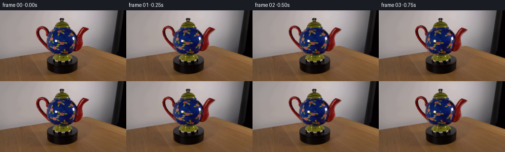
展开代码变化
--- 上一保存版本
+++ 本次保存版本
@@ -0,0 +1,186 @@
+from pathlib import Path
+import numpy as np
+from PIL import Image, ImageDraw, ImageFilter
+import cv2
+from scipy.ndimage import gaussian_filter
+from artifact_io import save
+
+ROOT=Path(__file__).resolve().parent
+W,H=256,144
+S=3
+src=np.array(Image.open(ROOT/'first_frame.png').convert('RGB'))
+
+# A small analytic, textured relief model for the red ceramic extremities.
+def polygon_mask(points, size=(W,H), scale=1):
+ im=Image.new('L',(size[0]*scale,size[1]*scale));d=ImageDraw.Draw(im)
+ d.polygon([(round(x*scale),round(y*scale)) for x,y in points],fill=255)
+ return np.array(im)
+
+handle=[(99,81),(95,78),(88,71),(81,63),(77,57),(74,50),(73,44),(74,39),(77,35),(81,33),(85,32),(89,33),(93,35),(96,39),(98,44),(99,49),(97,53),(94,52),(93,48),(93,44),(91,40),(88,38),(84,37),(81,38),(79,41),(79,46),(80,51),(82,56),(87,63),(94,69),(101,73),(106,77)]
+spout=[(144,79),(150,82),(155,83),(161,81),(165,77),(167,73),(168,68),(167,62),(166,58),(167,53),(170,48),(174,44),(178,41),(181,38),(177,36),(171,34),(168,34),(164,37),(160,42),(157,47),(153,53),(149,55),(145,60)]
+# clean photographic background is needed only where the handle and spout vacate.
+remove=np.maximum(polygon_mask(handle),polygon_mask(spout))
+remove=cv2.dilate(remove,np.ones((3,3),np.uint8))
+bg=cv2.inpaint(src,remove,5,cv2.INPAINT_TELEA)
+
+# Profile/silhouette of the rotationally symmetric body and its lid and foot.
+bodypoly=[(110.5,34.6),(138.8,34.6),(143.5,37.5),(148,42.5),(152,49),(154.5,55),(155.5,62),(154.4,69.5),(151.9,76),(147.4,81.5),(141,86),(133,89),(125,90.1),(116.7,88.7),(109,85.7),(103.8,81.2),(99.5,75.2),(96.8,68.5),(95.2,61),(96,53.5),(99.5,46),(104.4,40),(108.2,37)]
+lidpoly=[(109.5,35.4),(110.1,29.1),(113,26),(117,23.7),(122,22.2),(121.5,20.9),(120.3,19),(121.6,17.1),(124,16),(127.2,16.1),(130.4,17.8),(131,19.5),(128.4,22.3),(132.5,24),(136.5,26.5),(139.1,30.1),(141,35.7)]
+footpoly=[(118,89),(113,91.7),(109,95),(107.5,99.4),(108.5,103),(113,104.6),(122,106.2),(132,106.6),(142,103.9),(146.2,101),(145,97),(141.5,93),(136.5,90),(132,89)]
+bodymask=polygon_mask(bodypoly,scale=S).astype(float)/255
+lidmask=polygon_mask(lidpoly,scale=S).astype(float)/255
+footmask=polygon_mask(footpoly,scale=S).astype(float)/255
+solidmask=np.maximum.reduce([bodymask,lidmask,footmask])
+sourcehi=cv2.resize(src,(W*S,H*S),interpolation=cv2.INTER_CUBIC).astype(float)
+bghi=cv2.resize(bg,(W*S,H*S),interpolation=cv2.INTER_CUBIC).astype(float)
+
+# Determine horizontal cross-sections directly from the original silhouette.
+def profile(poly):
+ m=polygon_mask(poly,scale=S)
+ l=np.zeros(H*S);r=l.copy()
+ for j in range(H*S):
+ q=np.where(m[j]>0)[0]
+ if len(q):l[j]=q[0]/S;r[j]=q[-1]/S
+ return l,r
+bl,br=profile(bodypoly);ll,lr=profile(lidpoly);fl,fr=profile(footpoly)
+Y,X=np.mgrid[0:H*S,0:W*S].astype(np.float32);X/=S;Y/=S
+
+# Remove the stationary room reflections from the decorating texture and retain
+# them as a separate view-dependent glossy layer.
+white=np.min(src,axis=2)>135
+white &= polygon_mask(bodypoly)>0
+white=cv2.dilate(white.astype(np.uint8)*255,np.ones((3,3),np.uint8))
+tex=cv2.inpaint(src,white,3,cv2.INPAINT_TELEA)
+texhi=cv2.resize(tex,(W*S,H*S),interpolation=cv2.INTER_CUBIC).astype(np.float32)
+spec=sourcehi-texhi
+specmask=cv2.resize(white.astype(float)/255,(W*S,H*S),interpolation=cv2.INTER_LINEAR)
+
+# Base lighting stays fixed as the painted surface passes beneath it.
+def lathe_texture(theta,left,right,mask,kind):
+ c=(left+right)/2
+ rad=np.maximum((right-left)/2,0.6)
+ u=np.clip((X-c[:,None])/rad[:,None],-1,1)
+ phi=np.arcsin(u)+theta
+ sampleu=np.sin(phi)
+ # The floral ornament continues around the unseen part of the pot.
+ xmap=(c[:,None]+rad[:,None]*sampleu).astype(np.float32)*S
+ ymap=Y.copy()*S
+ if kind=='body':
+ # Camera looks slightly down; preserve latitude on the turning vessel.
+ depth=rad[:,None]*np.sqrt(np.maximum(0,1-u*u))
+ sd=rad[:,None]*np.cos(phi)
+ ymap+=(depth-sd)*0.18*S
+ ymap=np.clip(ymap,35*S,89*S)
+ image=texhi if kind=='body' else sourcehi.astype(np.float32)
+ sampled=cv2.remap(image,xmap,ymap.astype(np.float32),cv2.INTER_LINEAR,borderMode=cv2.BORDER_REFLECT_101)
+ if kind=='body':
+ du=0.72+0.28*np.sqrt(np.maximum(0,1-u*u))
+ su=0.72+0.28*np.sqrt(np.maximum(0,1-sampleu*sampleu))
+ sampled*=np.clip(du/su,.75,1.3)[...,None]
+ sampled+=spec*specmask[...,None]
+ # keep the photographic silhouette's subpixel fringe unaffected
+ inner=cv2.erode((mask*255).astype(np.uint8),np.ones((3,3),np.uint8)).astype(float)/255
+ return sampled*inner[...,None]+sourcehi*(1-inner[...,None])
+
+# Meshes have two curved sides and join around their contours. The extrusion
+# supplies the ceramic thickness as the view turns, rather than flat sprites.
+def make_mesh(poly,which):
+ scale=2
+ mask=polygon_mask(poly,scale=scale)
+ dist=cv2.distanceTransform(mask,cv2.DIST_L2,5)/scale
+ yy,xx=np.mgrid[0:H*scale,0:W*scale];xx=xx/scale;yy=yy/scale
+ inside=mask>0
+ q=np.where(inside)
+ pts=np.column_stack((xx[q],yy[q]))
+ if which=='handle':
+ radius=np.full(len(pts),3.15)
+ else:
+ radius=np.clip(2.2+(pts[:,1]-36)*.095,2.2,6.4)
+ d=dist[q]
+ z=np.sqrt(np.maximum(0,2*radius*d-d*d))
+ # source photo gives the front surface's exact image position.
+ sine=.22;cosine=np.sqrt(1-sine*sine)
+ yw=(64-pts[:,1]+sine*z)/cosine
+ vertices=np.column_stack((pts[:,0]-125,yw,z))
+ # fill the small roots originally hidden behind the spherical body.
+ colors=cv2.remap(src,pts[:,0].astype(np.float32).reshape(-1,1),pts[:,1].astype(np.float32).reshape(-1,1),cv2.INTER_LINEAR).reshape(-1,3).astype(float)
+ valid=(colors[:,0]>colors[:,1]*1.4)&(colors[:,0]>colors[:,2]*1.35)
+ if np.any(~valid):
+ from scipy.spatial import cKDTree
+ nearest=cKDTree(pts[valid]).query(pts[~valid])[1]
+ colors[~valid]=colors[valid][nearest]
+ inds=np.full(mask.shape,-1,int);inds[q]=np.arange(len(pts))
+ a=inds[:-1,:-1];b=inds[:-1,1:];c=inds[1:,:-1];e=inds[1:,1:]
+ faces=[]
+ for trip in [(a,b,c),(b,e,c)]:
+ ok=(trip[0]>=0)&(trip[1]>=0)&(trip[2]>=0)
+ faces.append(np.column_stack([v[ok] for v in trip]))
+ faces=np.concatenate(faces)
+ back=vertices.copy();back[:,2]=-z
+ both=np.concatenate((vertices,back))
+ co=np.concatenate((colors,colors*.86))
+ n=len(vertices)
+ fa=np.concatenate((faces,faces[:,::-1]+n))
+ # outer ribbons join front and back sheets.
+ boundary=(inside & (cv2.erode(mask,np.ones((3,3),np.uint8))==0))
+ for dy,dx in [(0,1),(1,0),(1,1)]:
+ qa=inds[:H*scale-dy,:W*scale-dx];qb=inds[dy:,dx:]
+ edge=boundary[:H*scale-dy,:W*scale-dx]&boundary[dy:,dx:]&(qa>=0)&(qb>=0)
+ aa=qa[edge];bb=qb[edge]
+ if len(aa):fa=np.concatenate((fa,np.column_stack((aa,bb,aa+n)),np.column_stack((bb,bb+n,aa+n))))
+ return both,co,fa
+
+meshes=[make_mesh(handle,'handle'),make_mesh(spout,'spout')]
+
+def raster(vertices,colors,faces,theta,out,zbuffer):
+ co=np.cos(theta);si=np.sin(theta)
+ xx=vertices[:,0]*co-vertices[:,2]*si
+ zz=vertices[:,0]*si+vertices[:,2]*co
+ yy=vertices[:,1]
+ sine=.22;cosine=np.sqrt(1-sine*sine)
+ xy=np.column_stack(((125+xx)*S,(64-cosine*yy+sine*zz)*S))
+ depth=zz*cosine+yy*sine
+ # Mild changes in ceramic lighting on the turning side surfaces.
+ cols=colors*(1-.075*np.sin(theta))
+ for tri in faces:
+ p=xy[tri];z=depth[tri];color=cols[tri]
+ x0=max(0,int(np.floor(p[:,0].min())));x1=min(W*S-1,int(np.ceil(p[:,0].max())))
+ y0=max(0,int(np.floor(p[:,1].min())));y1=min(H*S-1,int(np.ceil(p[:,1].max())))
+ if x0>x1 or y0>y1:continue
+ denom=(p[1,1]-p[2,1])*(p[0,0]-p[2,0])+(p[2,0]-p[1,0])*(p[0,1]-p[2,1])
+ if abs(denom)<1e-6:continue
+ ry,rx=np.mgrid[y0:y1+1,x0:x1+1];rx=rx+.0;ry=ry+.0
+ a=((p[1,1]-p[2,1])*(rx-p[2,0])+(p[2,0]-p[1,0])*(ry-p[2,1]))/denom
+ b=((p[2,1]-p[0,1])*(rx-p[2,0])+(p[0,0]-p[2,0])*(ry-p[2,1]))/denom
+ c=1-a-b
+ dep=a*z[0]+b*z[1]+c*z[2]
+ hit=(a>=-1e-4)&(b>=-1e-4)&(c>=-1e-4)&(dep>zbuffer[y0:y1+1,x0:x1+1])
+ if not hit.any():continue
+ block=out[y0:y1+1,x0:x1+1]
+ rgb=a[...,None]*color[0]+b[...,None]*color[1]+c[...,None]*color[2]
+ block[hit]=rgb[hit]
+ zbuffer[y0:y1+1,x0:x1+1][hit]=dep[hit]
+
+
+def generate():
+ frames=[src.copy()]
+ for i in range(1,20):
+ theta=np.deg2rad(60*i/19)
+ canvas=bghi.copy()
+ depth=np.full((H*S,W*S),-1000.)
+ for l,r,m,kind in [(bl,br,bodymask,'body'),(ll,lr,lidmask,'lid'),(fl,fr,footmask,'foot')]:
+ rotated=lathe_texture(theta,l,r,m,kind)
+ canvas=rotated*m[...,None]+canvas*(1-m[...,None])
+ radius=np.maximum((r-l)/2,.1)[:,None]
+ center=((l+r)/2)[:,None]
+ d=np.sqrt(np.maximum(0,radius**2-(X-center)**2))
+ worldy=(64-Y+.22*d)/np.sqrt(1-.22**2)
+ dep=d*np.sqrt(1-.22**2)+worldy*.22
+ depth[m>.1]=dep[m>.1]
+ for v,c,f in meshes:raster(v,c,f,theta,canvas,depth)
+ frame=cv2.resize(np.clip(canvas,0,255).astype(np.uint8),(W,H),interpolation=cv2.INTER_AREA)
+ frames.append(frame)
+ print('frame',i,flush=True)
+ save(np.stack(frames),ROOT)
+
+if __name__=='__main__':generate()
候选 02播放与检查图
点击播放 · 原生 RGB 像素

展开代码变化
--- 上一保存版本
+++ 本次保存版本
@@ -31,6 +31,26 @@
lidmask=polygon_mask(lidpoly,scale=S).astype(float)/255
footmask=polygon_mask(footpoly,scale=S).astype(float)/255
solidmask=np.maximum.reduce([bodymask,lidmask,footmask])
+# Recover only the wall and tabletop exposed by the moving attachments. Fitting
+# the empty wall avoids spreading the blue glaze into disoccluded room pixels.
+oy,ox=np.mgrid[0:H,0:W].astype(float)
+border=np.where(ox<162,99-28*ox/162,71+26*(ox-162)/94)
+occ=np.maximum.reduce([polygon_mask(bodypoly),polygon_mask(lidpoly),polygon_mask(footpoly),remove])
+wall=(oy<border-2)&(ox<225)&(cv2.dilate(occ,np.ones((9,9),np.uint8))==0)
+features=np.stack([np.ones_like(ox),ox/256,oy/144,(ox/256)**2,(oy/144)**2,ox*oy/(256*144)],axis=-1)
+coeff=np.linalg.lstsq(features[wall],src[wall].astype(float),rcond=None)[0]
+wallrgb=np.clip(features@coeff,0,255)
+# Table grain is sampled at matching height above the oblique table edge.
+samplex=np.where(ox<125,ox-45,ox+45)
+sampleborder=np.where(samplex<162,99-28*samplex/162,71+26*(samplex-162)/94)
+sampley=oy+sampleborder-border
+tablergb=cv2.remap(src,samplex.astype(np.float32),sampley.astype(np.float32),cv2.INTER_LINEAR,borderMode=cv2.BORDER_REFLECT_101)
+blend=np.clip(oy-border+.5,0,1)[...,None]
+clean=wallrgb*(1-blend)+tablergb*blend
+bg=src.copy()
+exposed=cv2.dilate(occ,np.ones((5,5),np.uint8))>0
+bg[exposed]=np.clip(clean,0,255).astype(np.uint8)[exposed]
+
sourcehi=cv2.resize(src,(W*S,H*S),interpolation=cv2.INTER_CUBIC).astype(float)
bghi=cv2.resize(bg,(W*S,H*S),interpolation=cv2.INTER_CUBIC).astype(float)
@@ -104,7 +124,7 @@
vertices=np.column_stack((pts[:,0]-125,yw,z))
# fill the small roots originally hidden behind the spherical body.
colors=cv2.remap(src,pts[:,0].astype(np.float32).reshape(-1,1),pts[:,1].astype(np.float32).reshape(-1,1),cv2.INTER_LINEAR).reshape(-1,3).astype(float)
- valid=(colors[:,0]>colors[:,1]*1.4)&(colors[:,0]>colors[:,2]*1.35)
+ valid=(colors[:,0]>colors[:,1]*2.0)&(colors[:,0]>colors[:,2]*1.9)
if np.any(~valid):
from scipy.spatial import cKDTree
nearest=cKDTree(pts[valid]).query(pts[~valid])[1]
@@ -118,7 +138,9 @@
faces=np.concatenate(faces)
back=vertices.copy();back[:,2]=-z
both=np.concatenate((vertices,back))
- co=np.concatenate((colors,colors*.86))
+ backcolors=np.tile(np.array([108.,13.,9.]),(n if False else len(vertices),1))
+ backcolors*= (0.82+0.18*np.minimum(z/4,1))[:,None]
+ co=np.concatenate((colors,backcolors))
n=len(vertices)
fa=np.concatenate((faces,faces[:,::-1]+n))
# outer ribbons join front and back sheets.
@@ -165,11 +187,11 @@
def generate():
frames=[src.copy()]
for i in range(1,20):
- theta=np.deg2rad(60*i/19)
+ theta=np.deg2rad(50*i/19)
canvas=bghi.copy()
depth=np.full((H*S,W*S),-1000.)
for l,r,m,kind in [(bl,br,bodymask,'body'),(ll,lr,lidmask,'lid'),(fl,fr,footmask,'foot')]:
- rotated=lathe_texture(theta,l,r,m,kind)
+ rotated=lathe_texture(theta,l,r,m,kind) if kind=='body' else sourcehi.copy()
canvas=rotated*m[...,None]+canvas*(1-m[...,None])
radius=np.maximum((r-l)/2,.1)[:,None]
center=((l+r)/2)[:,None]
候选 03播放与检查图
点击播放 · 原生 RGB 像素
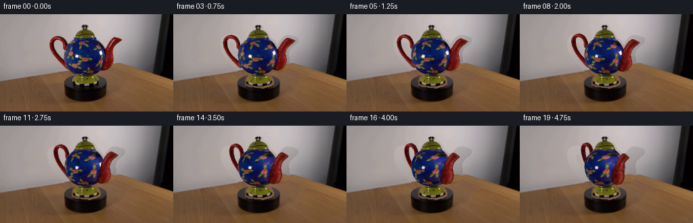
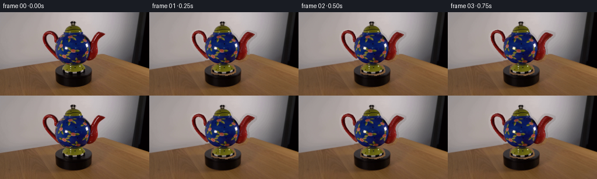
展开代码变化
--- 上一保存版本
+++ 本次保存版本
@@ -31,26 +31,13 @@
lidmask=polygon_mask(lidpoly,scale=S).astype(float)/255
footmask=polygon_mask(footpoly,scale=S).astype(float)/255
solidmask=np.maximum.reduce([bodymask,lidmask,footmask])
-# Recover only the wall and tabletop exposed by the moving attachments. Fitting
-# the empty wall avoids spreading the blue glaze into disoccluded room pixels.
-oy,ox=np.mgrid[0:H,0:W].astype(float)
-border=np.where(ox<162,99-28*ox/162,71+26*(ox-162)/94)
-occ=np.maximum.reduce([polygon_mask(bodypoly),polygon_mask(lidpoly),polygon_mask(footpoly),remove])
-wall=(oy<border-2)&(ox<225)&(cv2.dilate(occ,np.ones((9,9),np.uint8))==0)
-features=np.stack([np.ones_like(ox),ox/256,oy/144,(ox/256)**2,(oy/144)**2,ox*oy/(256*144)],axis=-1)
-coeff=np.linalg.lstsq(features[wall],src[wall].astype(float),rcond=None)[0]
-wallrgb=np.clip(features@coeff,0,255)
-# Table grain is sampled at matching height above the oblique table edge.
-samplex=np.where(ox<125,ox-45,ox+45)
-sampleborder=np.where(samplex<162,99-28*samplex/162,71+26*(samplex-162)/94)
-sampley=oy+sampleborder-border
-tablergb=cv2.remap(src,samplex.astype(np.float32),sampley.astype(np.float32),cv2.INTER_LINEAR,borderMode=cv2.BORDER_REFLECT_101)
-blend=np.clip(oy-border+.5,0,1)[...,None]
-clean=wallrgb*(1-blend)+tablergb*blend
+# Inpaint the entire object while retaining only its exposed attachment zones.
+# This prevents the blue glaze or black support from entering the empty wall.
+allpot=np.maximum.reduce([polygon_mask(bodypoly),polygon_mask(lidpoly),polygon_mask(footpoly),remove])
+allpot=cv2.dilate(allpot,np.ones((3,3),np.uint8))
+clean=cv2.inpaint(src,allpot,5,cv2.INPAINT_TELEA)
bg=src.copy()
-exposed=cv2.dilate(occ,np.ones((5,5),np.uint8))>0
-bg[exposed]=np.clip(clean,0,255).astype(np.uint8)[exposed]
-
+bg[remove>0]=clean[remove>0]
sourcehi=cv2.resize(src,(W*S,H*S),interpolation=cv2.INTER_CUBIC).astype(float)
bghi=cv2.resize(bg,(W*S,H*S),interpolation=cv2.INTER_CUBIC).astype(float)
@@ -138,7 +125,7 @@
faces=np.concatenate(faces)
back=vertices.copy();back[:,2]=-z
both=np.concatenate((vertices,back))
- backcolors=np.tile(np.array([108.,13.,9.]),(n if False else len(vertices),1))
+ backcolors=np.tile(np.array([108.,13.,9.]),(len(vertices),1))
backcolors*= (0.82+0.18*np.minimum(z/4,1))[:,None]
co=np.concatenate((colors,backcolors))
n=len(vertices)
候选 04播放与检查图

可观测工具轨迹
实际执行的命令与返回图片。
命令 1exit 0
/bin/bash -lc "ls -la && cat prompt.txt && printf '\\n---RULES---\\n' && cat GENERATION_RULES.md"
命令 2exit 0
/bin/bash -lc "python - <<'PY'
from PIL import Image
im=Image.open('first_frame.png');print(im.size);im.resize((1024,576)).save('.tmp/large.png')
PY
cat artifact_io.py"命令 3exit 0
/bin/bash -lc "python - <<'PY'
from PIL import Image,ImageDraw
im=Image.open('first_frame.png').resize((1024,576)); d=ImageDraw.Draw(im)
for x in range(60,191,5):
d.line((x*4,40,x*4,480),fill=(180,180,180),width=1);d.text((x*4,40),str(x),fill='white')
for y in range(15,121,5):
d.line((240,y*4,760,y*4),fill=(180,180,180),width=1);d.text((240,y*4),str(y),fill='white')
im.save('.tmp/grid.png')
PY"命令 4exit 0
/bin/bash -lc "python - <<'PY' import importlib.util for a in ['cv2','scipy','numpy','PIL','numba']: print(a,bool(importlib.util.find_spec(a))) PY"
命令 5exit 0
/bin/bash -lc "python - <<'PY'
from PIL import Image
im=Image.open('first_frame.png')
im.crop((140,30,184,88)).resize((440,580)).save('.tmp/spout.png')
im.crop((70,28,106,85)).resize((360,570)).save('.tmp/handle.png')
PY"命令 6exit 0
/bin/bash -lc "cat > generate.py <<'PY'
from pathlib import Path
import numpy as np
from PIL import Image, ImageDraw, ImageFilter
import cv2
from scipy.ndimage import gaussian_filter
from artifact_io import save
ROOT=Path(__file__).resolve().parent
W,H=256,144
S=3
src=np.array(Image.open(ROOT/'first_frame.png').convert('RGB'))
# A small analytic, textured relief model for the red ceramic extremities.
def polygon_mask(points, size=(W,H), scale=1):
im=Image.new('L',(size[0]*scale,size[1]*scale));d=ImageDraw.Draw(im)
d.polygon([(round(x*scale),round(y*scale)) for x,y in points],fill=255)
return np.array(im)
handle=[(99,81),(95,78),(88,71),(81,63),(77,57),(74,50),(73,44),(74,39),(77,35),(81,33),(85,32),(89,33),(93,35),(96,39),(98,44),(99,49),(97,53),(94,52),(93,48),(93,44),(91,40),(88,38),(84,37),(81,38),(79,41),(79,46),(80,51),(82,56),(87,63),(94,69),(101,73),(106,77)]
spout=[(144,79),(150,82),(155,83),(161,81),(165,77),(167,73),(168,68),(167,62),(166,58),(167,53),(170,48),(174,44),(178,41),(181,38),(177,36),(171,34),(168,34),(164,37),(160,42),(157,47),(153,53),(149,55),(145,60)]
# clean photographic background is needed only where the handle and spout vacate.
remove=np.maximum(polygon_mask(handle),polygon_mask(spout))
remove=cv2.dilate(remove,np.ones((3,3),np.uint8))
bg=cv2.inpaint(src,remove,5,cv2.INPAINT_TELEA)
# Profile/silhouette of the rotationally symmetric body and its lid and foot.
bodypoly=[(110.5,34.6),(138.8,34.6),(143.5,37.5),(148,42.5),(152,49),(154.5,55),(155.5,62),(154.4,69.5),(151.9,76),(147.4,81.5),(141,86),(133,89),(125,90.1),(116.7,88.7),(109,85.7),(103.8,81.2),(99.5,75.2),(96.8,68.5),(95.2,61),(96,53.5),(99.5,46),(104.4,40),(108.2,37)]
lidpoly=[(109.5,35.4),(110.1,29.1),(113,26),(117,23.7),(122,22.2),(121.5,20.9),(120.3,19),(121.6,17.1),(124,16),(127.2,16.1),(130.4,17.8),(131,19.5),(128.4,22.3),(132.5,24),(136.5,26.5),(139.1,30.1),(141,35.7)]
footpoly=[(118,89),(113,91.7),(109,95),(107.5,99.4),(108.5,103),(113,104.6),(122,106.2),(132,106.6),(142,103.9),(146.2,101),(145,97),(141.5,93),(136.5,90),(132,89)]
bodymask=polygon_mask(bodypoly,scale=S).astype(float)/255
lidmask=polygon_mask(lidpoly,scale=S).astype(float)/255
footmask=polygon_mask(footpoly,scale=S).astype(float)/255
solidmask=np.maximum.reduce([bodymask,lidmask,footmask])
sourcehi=cv2.resize(src,(W*S,H*S),interpolation=cv2.INTER_CUBIC).astype(float)
bghi=cv2.resize(bg,(W*S,H*S),interpolation=cv2.INTER_CUBIC).astype(float)
# Determine horizontal cross-sections directly from the original silhouette.
def profile(poly):
m=polygon_mask(poly,scale=S)
l=np.zeros(H*S);r=l.copy()
for j in range(H*S):
q=np.where(m[j]>0)[0]
if len(q):l[j]=q[0]/S;r[j]=q[-1]/S
return l,r
bl,br=profile(bodypoly);ll,lr=profile(lidpoly);fl,fr=profile(footpoly)
Y,X=np.mgrid[0:H*S,0:W*S].astype(np.float32);X/=S;Y/=S
# Remove the stationary room reflections from the decorating texture and retain
# them as a separate view-dependent glossy layer.
white=np.min(src,axis=2)>135
white &= polygon_mask(bodypoly)>0
white=cv2.dilate(white.astype(np.uint8)*255,np.ones((3,3),np.uint8))
tex=cv2.inpaint(src,white,3,cv2.INPAINT_TELEA)
texhi=cv2.resize(tex,(W*S,H*S),interpolation=cv2.INTER_CUBIC).astype(np.float32)
spec=sourcehi-texhi
specmask=cv2.resize(white.astype(float)/255,(W*S,H*S),interpolation=cv2.INTER_LINEAR)
# Base lighting stays fixed as the painted surface passes beneath it.
def lathe_texture(theta,left,right,mask,kind):
c=(left+right)/2
rad=np.maximum((right-left)/2,0.6)
u=np.clip((X-c[:,None])/rad[:,None],-1,1)
phi=np.arcsin(u)+theta
sampleu=np.sin(phi)
# The floral ornament continues around the unseen part of the pot.
xmap=(c[:,None]+rad[:,None]*sampleu).astype(np.float32)*S
ymap=Y.copy()*S
if kind=='body':
# Camera looks slightly down; preserve latitude on the turning vessel.
depth=rad[:,None]*np.sqrt(np.maximum(0,1-u*u))
sd=rad[:,None]*np.cos(phi)
ymap+=(depth-sd)*0.18*S
ymap=np.clip(ymap,35*S,89*S)
image=texhi if kind=='body' else sourcehi.astype(np.float32)
sampled=cv2.remap(image,xmap,ymap.astype(np.float32),cv2.INTER_LINEAR,borderMode=cv2.BORDER_REFLECT_101)
if kind=='body':
du=0.72+0.28*np.sqrt(np.maximum(0,1-u*u))
su=0.72+0.28*np.sqrt(np.maximum(0,1-sampleu*sampleu))
sampled*=np.clip(du/su,.75,1.3)[...,None]
sampled+=spec*specmask[...,None]
# keep the photographic silhouette's subpixel fringe unaffected
inner=cv2.erode((mask*255).astype(np.uint8),np.ones((3,3),np.uint8)).astype(float)/255
return sampled*inner[...,None]+sourcehi*(1-inner[...,None])
# Meshes have two curved sides and join around their contours. The extrusion
# supplies the ceramic thickness as the view turns, rather than flat sprites.
def make_mesh(poly,which):
scale=2
mask=polygon_mask(poly,scale=scale)
dist=cv2.distanceTransform(mask,cv2.DIST_L2,5)/scale
yy,xx=np.mgrid[0:H*scale,0:W*scale];xx=xx/scale;yy=yy/scale
inside=mask>0
q=np.where(inside)
pts=np.column_stack((xx[q],yy[q]))
if which=='handle':
radius=np.full(len(pts),3.15)
else:
radius=np.clip(2.2+(pts[:,1]-36)*.095,2.2,6.4)
d=dist[q]
z=np.sqrt(np.maximum(0,2*radius*d-d*d))
# source photo gives the front surface's exact image position.
sine=.22;cosine=np.sqrt(1-sine*sine)
yw=(64-pts[:,1]+sine*z)/cosine
vertices=np.column_stack((pts[:,0]-125,yw,z))
# fill the small roots originally hidden behind the spherical body.
colors=cv2.remap(src,pts[:,0].astype(np.float32).reshape(-1,1),pts[:,1].astype(np.float32).reshape(-1,1),cv2.INTER_LINEAR).reshape(-1,3).astype(float)
valid=(colors[:,0]>colors[:,1]*1.4)&(colors[:,0]>colors[:,2]*1.35)
if np.any(~valid):
from scipy.spatial import cKDTree
nearest=cKDTree(pts[valid]).query(pts[~valid])[1]
colors[~valid]=colors[valid][nearest]
inds=np.full(mask.shape,-1,int);inds[q]=np.arange(len(pts))
a=inds[:-1,:-1];b=inds[:-1,1:];c=inds[1:,:-1];e=inds[1:,1:]
faces=[]
for trip in [(a,b,c),(b,e,c)]:
ok=(trip[0]>=0)&(trip[1]>=0)&(trip[2]>=0)
faces.append(np.column_stack([v[ok] for v in trip]))
faces=np.concatenate(faces)
back=vertices.copy();back[:,2]=-z
both=np.concatenate((vertices,back))
co=np.concatenate((colors,colors*.86))
n=len(vertices)
fa=np.concatenate((faces,faces[:,::-1]+n))
# outer ribbons join front and back sheets.
boundary=(inside & (cv2.erode(mask,np.ones((3,3),np.uint8))==0))
for dy,dx in [(0,1),(1,0),(1,1)]:
qa=inds[:H*scale-dy,:W*scale-dx];qb=inds[dy:,dx:]
edge=boundary[:H*scale-dy,:W*scale-dx]&boundary[dy:,dx:]&(qa>=0)&(qb>=0)
aa=qa[edge];bb=qb[edge]
if len(aa):fa=np.concatenate((fa,np.column_stack((aa,bb,aa+n)),np.column_stack((bb,bb+n,aa+n))))
return both,co,fa
meshes=[make_mesh(handle,'handle'),make_mesh(spout,'spout')]
def raster(vertices,colors,faces,theta,out,zbuffer):
co=np.cos(theta);si=np.sin(theta)
xx=vertices[:,0]*co-vertices[:,2]*si
zz=vertices[:,0]*si+vertices[:,2]*co
yy=vertices[:,1]
sine=.22;cosine=np.sqrt(1-sine*sine)
xy=np.column_stack(((125+xx)*S,(64-cosine*yy+sine*zz)*S))
depth=zz*cosine+yy*sine
# Mild changes in ceramic lighting on the turning side surfaces.
cols=colors*(1-.075*np.sin(theta))
for tri in faces:
p=xy[tri];z=depth[tri];color=cols[tri]
x0=max(0,int(np.floor(p[:,0].min())));x1=min(W*S-1,int(np.ceil(p[:,0].max())))
y0=max(0,int(np.floor(p[:,1].min())));y1=min(H*S-1,int(np.ceil(p[:,1].max())))
if x0>x1 or y0>y1:continue
denom=(p[1,1]-p[2,1])*(p[0,0]-p[2,0])+(p[2,0]-p[1,0])*(p[0,1]-p[2,1])
if abs(denom)<1e-6:continue
ry,rx=np.mgrid[y0:y1+1,x0:x1+1];rx=rx+.0;ry=ry+.0
a=((p[1,1]-p[2,1])*(rx-p[2,0])+(p[2,0]-p[1,0])*(ry-p[2,1]))/denom
b=((p[2,1]-p[0,1])*(rx-p[2,0])+(p[0,0]-p[2,0])*(ry-p[2,1]))/denom
c=1-a-b
dep=a*z[0]+b*z[1]+c*z[2]
hit=(a>=-1e-4)&(b>=-1e-4)&(c>=-1e-4)&(dep>zbuffer[y0:y1+1,x0:x1+1])
if not hit.any():continue
block=out[y0:y1+1,x0:x1+1]
rgb=a[...,None]*color[0]+b[...,None]*color[1]+c[...,None]*color[2]
block[hit]=rgb[hit]
zbuffer[y0:y1+1,x0:x1+1][hit]=dep[hit]
def generate():
frames=[src.copy()]
for i in range(1,20):
theta=np.deg2rad(60*i/19)
canvas=bghi.copy()
depth=np.full((H*S,W*S),-1000.)
for l,r,m,kind in [(bl,br,bodymask,'body'),(ll,lr,lidmask,'lid'),(fl,fr,footmask,'foot')]:
rotated=lathe_texture(theta,l,r,m,kind)
canvas=rotated*m[...,None]+canvas*(1-m[...,None])
radius=np.maximum((r-l)/2,.1)[:,None]
center=((l+r)/2)[:,None]
d=np.sqrt(np.maximum(0,radius**2-(X-center)**2))
worldy=(64-Y+.22*d)/np.sqrt(1-.22**2)
dep=d*np.sqrt(1-.22**2)+worldy*.22
depth[m>.1]=dep[m>.1]
for v,c,f in meshes:raster(v,c,f,theta,canvas,depth)
frame=cv2.resize(np.clip(canvas,0,255).astype(np.uint8),(W,H),interpolation=cv2.INTER_AREA)
frames.append(frame)
print('frame',i,flush=True)
save(np.stack(frames),ROOT)
if __name__=='__main__':generate()
PY
python generate.py"命令 7exit 0
/bin/bash -lc "python - <<'PY'
from PIL import Image
for i in [1,9,19]:
Image.open('frames/%02d.png'%i).resize((1024,576)).save('.tmp/f%02d.png'%i)
PY"命令 8exit 0
/bin/bash -lc "python - <<'PY' p='generate.py' s=open(p).read() pos=\"solidmask=np.maximum.reduce([bodymask,lidmask,footmask])\" repl='''solidmask=np.maximum.reduce([bodymask,lidmask,footmask]) # Recover only the wall and tabletop exposed by the moving attachments. Fitting # the empty wall avoids spreading the blue glaze into disoccluded room pixels. oy,ox=np.mgrid[0:H,0:W].astype(float) border=np.where(ox<162,99-28*ox/162,71+26*(ox-162)/94) occ=np.maximum.reduce([polygon_mask(bodypoly),polygon_mask(lidpoly),polygon_mask(footpoly),remove]) wall=(oy<border-2)&(ox<225)&(cv2.dilate(occ,np.ones((9,9),np.uint8))==0) features=np.stack([np.ones_like(ox),ox/256,oy/144,(ox/256)**2,(oy/144)**2,ox*oy/(256*144)],axis=-1) coeff=np.linalg.lstsq(features[wall],src[wall].astype(float),rcond=None)[0] wallrgb=np.clip(features@coeff,0,255) # Table grain is sampled at matching height above the oblique table edge. samplex=np.where(ox<125,ox-45,ox+45) sampleborder=np.where(samplex<162,99-28*samplex/162,71+26*(samplex-162)/94) sampley=oy+sampleborder-border tablergb=cv2.remap(src,samplex.astype(np.float32),sampley.astype(np.float32),cv2.INTER_LINEAR,borderMode=cv2.BORDER_REFLECT_101) blend=np.clip(oy-border+.5,0,1)[...,None] clean=wallrgb*(1-blend)+tablergb*blend bg=src.copy() exposed=cv2.dilate(occ,np.ones((5,5),np.uint8))>0 bg[exposed]=np.clip(clean,0,255).astype(np.uint8)[exposed] ''' s=s.replace(pos,repl) s=s.replace(\"valid=(colors[:,0]>colors[:,1]*1.4)&(colors[:,0]>colors[:,2]*1.35)\",\"valid=(colors[:,0]>colors[:,1]*2.0)&(colors[:,0]>colors[:,2]*1.9)\") s=s.replace(\"co=np.concatenate((colors,colors*.86))\",\"backcolors=np.tile(np.array([108.,13.,9.]),(n if False else len(vertices),1))\\n backcolors*= (0.82+0.18*np.minimum(z/4,1))[:,None]\\n co=np.concatenate((colors,backcolors))\") s=s.replace(\"theta=np.deg2rad(60*i/19)\",\"theta=np.deg2rad(50*i/19)\") s=s.replace(\"rotated=lathe_texture(theta,l,r,m,kind)\",\"rotated=lathe_texture(theta,l,r,m,kind) if kind=='body' else sourcehi.copy()\") open(p,'w').write(s) PY python generate.py"
命令 9exit 0
/bin/bash -lc "python - <<'PY'
from PIL import Image
Image.open('frames/19.png').resize((1024,576)).save('.tmp/f19.png')
PY"命令 10exit 0
/bin/bash -lc "python - <<'PY'
p='generate.py';s=open(p).read();a=s.index('# Recover only');b=s.index('sourcehi=',a)
s=s[:a]+'''# Inpaint the entire object while retaining only its exposed attachment zones.
# This prevents the blue glaze or black support from entering the empty wall.
allpot=np.maximum.reduce([polygon_mask(bodypoly),polygon_mask(lidpoly),polygon_mask(footpoly),remove])
allpot=cv2.dilate(allpot,np.ones((3,3),np.uint8))
clean=cv2.inpaint(src,allpot,5,cv2.INPAINT_TELEA)
bg=src.copy()
bg[remove>0]=clean[remove>0]
'''+s[b:]
s=s.replace('(n if False else len(vertices),1)','(len(vertices),1)')
open(p,'w').write(s)
PY
python generate.py"命令 11exit 0
/bin/bash -lc "python - <<'PY'
import numpy as np
from PIL import Image
from pathlib import Path
f=np.stack([np.array(Image.open(p)) for p in sorted(Path('frames').glob('*.png'))])
assert f.shape==(20,144,256,3) and f.dtype==np.uint8
assert np.array_equal(f[0],np.array(Image.open('first_frame.png').convert('RGB')))
p=np.load('pixels.npz')['pixels'];assert p.shape==(144,256,20)
print('Verified 20 RGB frames at 256x144, exact first frame, and pixels.npz.')
PY"视觉工具实际返回图片 1
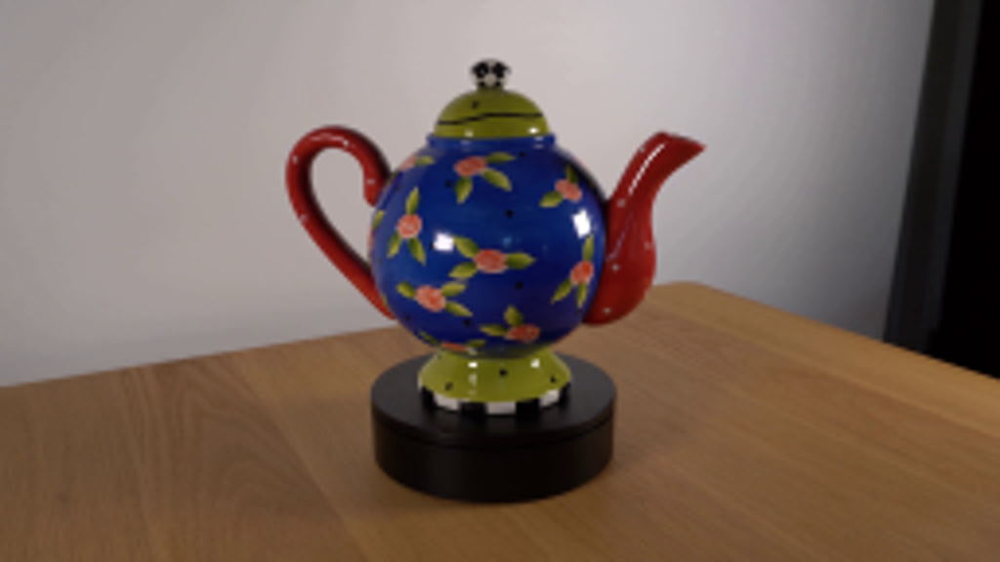
视觉工具实际返回图片 2
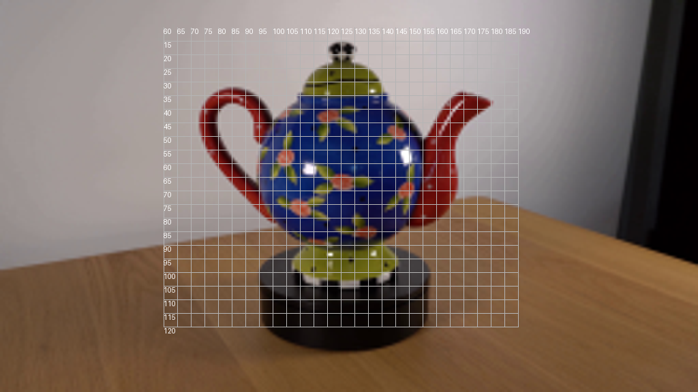
视觉工具实际返回图片 3
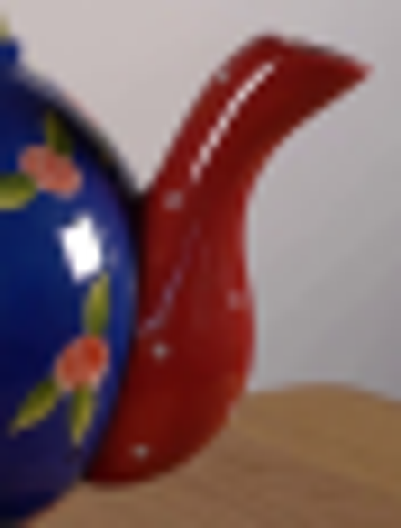
视觉工具实际返回图片 4
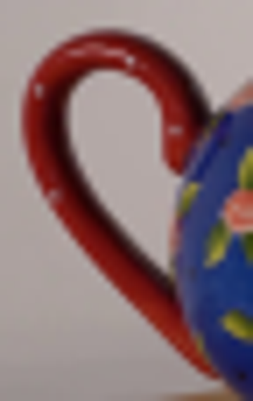
视觉工具实际返回图片 5
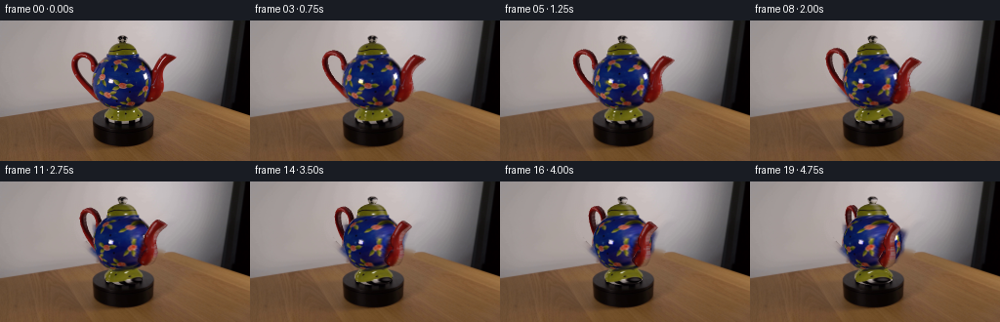
视觉工具实际返回图片 6
视觉工具实际返回图片 7
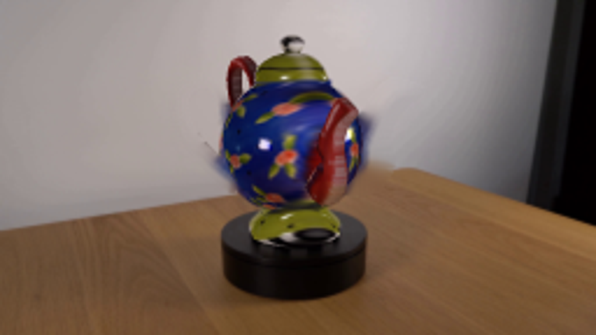
视觉工具实际返回图片 8
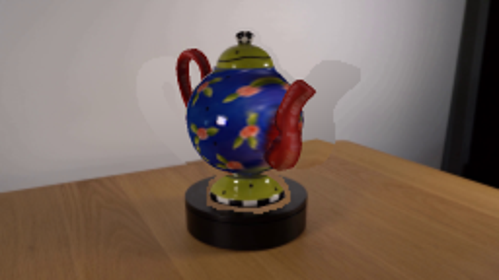
视觉工具实际返回图片 9
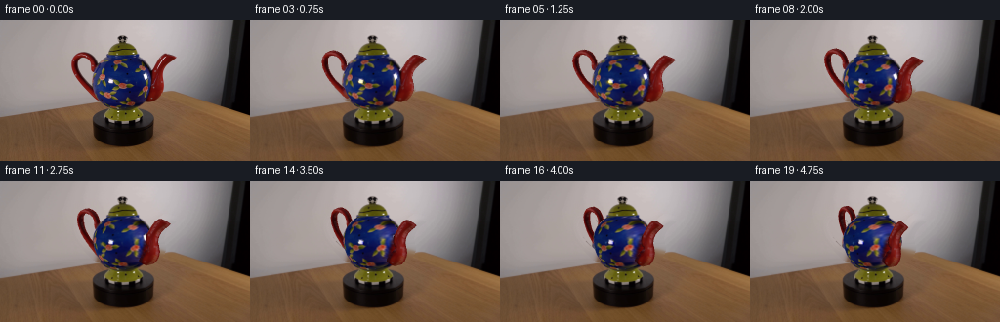
保存候选 4 份；完成命令 11 次；可验证图片返回 9 张。原始 API 响应与完整日志保留在本地。